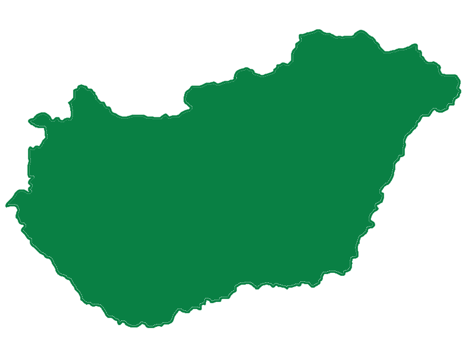

Ennek a projektnek a céljaira a "Magyar" kifejezéskés az Etnikai csoportra, vonatkozik, nem csak azokra aki mai Magyarország határain belül él. Ez a megkülönböztetés elengedhetetlen a projekt megértéséhez és kontextualizálásához. Ezek a történelmi térképek bemutatják az ország határának számos (figyelemre méltó) változását a jelenlegi határokhoz viszonyítva, amint azt később bemutattuk: a magyarok vándorlása akkor történt, amikor a határok jelentősen különböztek a mai határoktól. Lényegében az emigrációkor „magyar állampolgárságúként” definiált emberek továbbra is etnikai magyarok annak ellenére, hogy a mai Románia, Horvátország, Szlovákia, Ausztria vagy Szlovénia területéről költöznek.
A világháborúk utáni Magyarország a volt területének 1/3-a